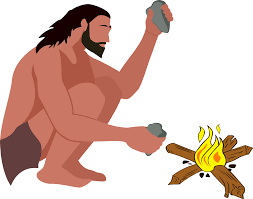
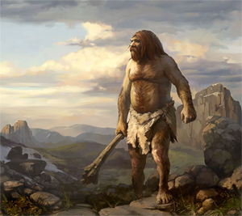
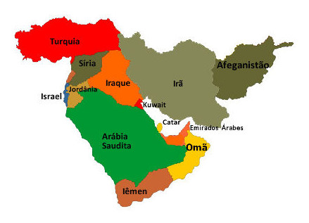
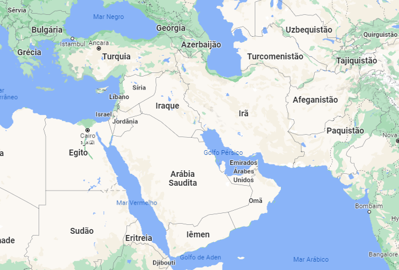

400 a 315k. - nesse período, o Homo erectus, uma espécie extinta, de Hominídeo que evoluiu na África, e viveu entre 1,8 milhões de anos atrás até 100-200 mil anos atrás, aprende a controlar o fogo, eles usavam da técnica de fricção entre duas pedras, esfregando uma na outra ele conseguia produzir uma faísca, que se colocada em algum lugar de fácil combustão, pegaria fogo normalmente. Assim deixou-se de se esperar que um raio caísse em alguma árvore ou algo do gênero, para que usasse do fogo. Quando o homem aprendeu a acender uma fogueira, ganhou um aliado para manter o corpo aquecido em climas frios, afastar animais predadores e preparar alimentos, tornando-os mais saborosos e saudáveis. Não há um consenso na comunidade científica de quando isso aconteceu, algumas pesquisas sugerem que o Homo erectus teria aprendido a controlar o fogo há 400 mil anos, outras há mais de 1 milhão, optamos aqui por colocar entre 400 a 315 mil anos, tendo como referência wikipedia.

O homem de Neandertal, é uma espécie prima humana
extinta com o qual o homem moderno conviveu, surgiram há cerca de
400 mil anos na Europa e no Médio Oriente e, na península ibérica,
extinguiram-se há 28 mil anos. O fóssil mais antigo encontrado data-se
430 mil anos atrás.
O homem de Neandertal, possui grandes porções de seu DNA similar
as sequencias dos humanos modernos. Além disso, o "sequenciamento
de DNA" (métodos de biologia molecular que têm como finalidade
determinar a ordem das bases nitrogenadas adenina (A), guanina (G),
citosina (C) e timina (T) da molécula de DNA) nuclear neandertal
realizado desde 2006 e publicado a partir de 2010, mostrou um antigo
"fluxo gênico" entre os homens neandertais e os homens modernos da
Eurásia. Além de termos mais de 30% do genoma neandertal que
sobrevive em toda a população atual em diferentes locais do nosso
genoma. Acredita-se também que uma pequena parte desses genes
adquiridos por hibridização que estão amplamente presentes em
humanos e tenham sido selecionado na nossa espécie por trazer
vantagens adaptativas.
O homem de Neandertal, era sofisticado em vários aspectos, tendo
uma cultura chamada de cultura musteriense. Além deles usarem ferramentas,
também usavam o fogo, eram bons caçadores e já cuidariam dos doentes.
A alimentação continha principalmente carnes que provinha de
caçadas como Veado Vermelho, Cavalos, Bisontes, Rinocerontes-lanudos e
diversas outras espécies de médio e grande porte como mamutes e grande bovídeos.
Há evidencias também de que comiam animais menores como
Tartarugas, Crustáceos, Lebres, Coelhos e Pássaros.
Alimentavam-se também de vegetais, legumes e tâmaras.



Correções e sugestões: maicke.andrew@hotmail.com
obs: paginas em processo de criação.